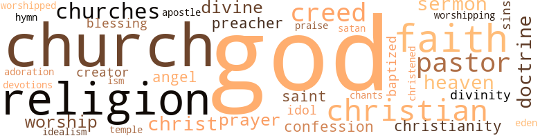

Charleston Love Story or Hortense Vancross, by Steward, Theodophilus Gould (1899)
33 music-related terms matched in this text.
Most frequent terms in this topic: song (4); sang (4); line (3); sing (3); section (2)
chant.n.01
Definition: a repetitive song in which as many syllables as necessary are assigned to a single tone
| word | sentence |
|---|---|
| chants | Between the two extremes already men - tioned were several strata of the middle class , comprising superior mechanics , mer - chants of secondary grade , school teachers , clerks , bookkeepers , and the like . |
fife.n.01
Definition: a small high-pitched flute similar to a piccolo; has a shrill tone and is used chiefly to accompany drums in a marching band
| word | sentence |
|---|---|
| fife | When the war broke out Leonard , who had just reached manhood , and still pos - sessed that martial spirit which had mani - fested itself in the shrill notes of his boyish fife , enlisted at the first call . |
| fife | His chief pas - time was to blow outlandish airs upon a small fife , the notes of which were as much out of place in that orderly home as were his manners and temper . |
hymn.n.01
Definition: a song of praise (to God or to a saint or to a nation)
| word | sentence |
|---|---|
| hymn | ' I hear the noise of wings , ' " said she , quoting from a familiar hymn . |
music.n.01
Definition: an artistic form of auditory communication incorporating instrumental or vocal tones in a structured and continuous manner
| word | sentence |
|---|---|
| music | The nest might remain , but the birds of song would have carried their music to other bowers . |
| music | Suddenly the dull sound of a drum was heard , accompanied by other sounds of inferior martial music . |
musical.n.01
Definition: a play or film whose action and dialogue is interspersed with singing and dancing
| word | sentence |
|---|---|
| musical | His voice was in full harmony with his general appearance - full , round , sympathetic , and musical ; and his manner was free from belittling affectation . |
musical_instrument.n.01
Definition: any of various devices or contrivances that can be used to produce musical tones or sounds
| word | sentence |
|---|---|
| instrument | And a share of her worship was received by the instrument which should have gone past him to fall at the shrine of the Infinite One . |
phrase.n.02
Definition: a short musical passage
| word | sentence |
|---|---|
| phrases | Soon her rich , clear voice , came out , rather softly , in the opening phrases of a song of Christian triumph . |
recitative.n.01
Definition: a vocal passage of narrative text that a singer delivers with natural rhythms of speech
| word | sentence |
|---|---|
| recitative | Then drop - ping into the purest recitative , she went on : " Therefore are they before the throne of God and serve Him day and night in his temple . |
section.n.01
Definition: a self-contained part of a larger composition (written or musical)
| word | sentence |
|---|---|
| section | Charleston was also the center and marked representative of a slaveholding section , and had a very large slave popula - tion . |
| section | It is my purpose to make my home somewhere in this section , quite prob - ably in Georgia , " replied Leonard . |
sing.v.02
Definition: produce tones with the voice
| word | sentence |
|---|---|
| sang | True to that charity which sang itself in that Easter poem , she continued to love and pity the one being who had wronged her most . |
| sang | She knew that all was well and her pious heart sang : " I have anchored my soul in the haven of rest . " |
| sing | This morning she was to sing her first solo in church . |
| sing | At its conclusion there was a slight rustle and then the organ gave forth a few pre - liminary notes , and Mary Howell arose to sing . |
| sang | She sang with a sweetness that riveted the attention of every one in the house ; and when after a brief interlude she poured forth her voice the fullness of its strength to render the rapturous answer : " These are they which came out of great tribula - tion and have washed their robes and made them white in the blood of the Lamb , " all were moved by the sweet tones and by the correct interpretation of the opening scenes in the transforming drama which was , by her matchless power of song , enacting itself in full view . |
| sang | For the Lamb which is in the midst of the throne shall feed them , and shall lead them into living foun - tains of waters and God shall wipe away all tears from their eyes , " as she sang this her eyes wandered away from the people in front and in the galleries , and her gaze seemed to seek a resting-place near the ceiling . |
| sing | As she ceased to sing she sank back in her chair , and covering her face with her handkerchief softly murmured , " Mamma - through tribulations deep ! |
| singing | They had entered the city triumphantly singing " John Brown , " and thousands of freed men had caught the stirring chorus . |
song.n.01
Definition: a short musical composition with words
| word | sentence |
|---|---|
| songs | Thus , flowers , and songs , and tuneful bolls , Are made to evidence our thought Of what this morn has been to us , Of what Christ 's death hath wrought . |
| song | Soon her rich , clear voice , came out , rather softly , in the opening phrases of a song of Christian triumph . |
| song | She sang with a sweetness that riveted the attention of every one in the house ; and when after a brief interlude she poured forth her voice the fullness of its strength to render the rapturous answer : " These are they which came out of great tribula - tion and have washed their robes and made them white in the blood of the Lamb , " all were moved by the sweet tones and by the correct interpretation of the opening scenes in the transforming drama which was , by her matchless power of song , enacting itself in full view . |
| song | Leonard C. Howell had heard the song and had seen the vision . |
| song | The nest might remain , but the birds of song would have carried their music to other bowers . |
| songs | Indeed it might almost be said of her that she did not die at all , but having finished her work , she fell asleep , lulled to her final rest by angelic songs and enveloped with the curtains of eternal peace . |
theme.n.03
Definition: (music) melodic subject of a musical composition
| word | sentence |
|---|---|
| themes | While Hortense was delighting and strengthening her soul with the rich thoughts of Easter , he was ex - citing and stimulating thoughts of an opposite character , as he met with other wild spirits in discussion upon such delect - able themes as freedom , radicalism , and progress . |
| theme | Mr. Gordon was all aglow with his theme and the occasion . |
tune.n.01
Definition: a succession of notes forming a distinctive sequence
| word | sentence |
|---|---|
| lines | As a memento of this Easter , on returning from the service Hortense wrote the following spiritual lines : 'T is Easter morn : and tender eyes , Bedewed with tears of love and deepest sympathy , Are raised in praise of our dear Lord ; While Trust , and Faith , and Hope profound , Beam forth on this sweet morn To testify , that though the ages pass , His work doth still go on . |
| line | His theory stopped short at a line drawn between love and lust ; but his practice confounded these two passions and ignored the limitation of his philosophy . |
| line | Somewhat in this line ran Leonard 's thoughts as he walked up and down his sick wife 's bedroom . |
| line | In his earlier days he had been suc - cessful both as a small farmer and as a dealer in cordwood and hoop-poles ; and many of his ventures in this line had sailed out of the tortuous rivers of South Jersey to Philadelphia , where the wood and the poles then found ready sale . |
upright.n.02
Definition: a piano with a vertical sounding board
| word | sentence |
|---|---|
| upright | He soon won the reward due his upright and manly bearing in the confidence and good will of the community ; and the un - pleasant school episode faded from public memory . |
52 violence-related terms matched in this text.
Most frequent terms in this topic: jealousy (4); scorn (4); fight (4); assaults (3); bleeding (3)
bayonet.n.01
Definition: a knife that can be fixed to the end of a rifle and used as a weapon
| word | sentence |
|---|---|
| bayonet | At Honey Hill he participated in that bloody bayonet duel between his own regiment and a crack regiment from Georgia , the " Savannah Grays , " in which the Southern regiment was literally cut to pieces ; in a word , he was with his regiment constantly , from the time that he joined it with his new com - mission until it practically ended the war with the last ' fight against rebellion at Boynton 's Mill . |
| bayonets | They knew that Southern chivalry had been un - horsed by Federal bayonets , and that Southern law had been declared inoperative by the Department Commander . |
bleeding.n.01
Definition: the flow of blood from a ruptured blood vessel
| word | sentence |
|---|---|
| bleeding | She felt herself ban - ished from it as the dove from the ark , and as she wandered about in thought over the wide earth , finding no resting-place for the sole of her foot , bruised in spirit and bleeding at heart , she threw her weary wings against Leonard 's breast only to find it closed . |
| bleeding | Leonard arose , but the fall and the blow he had received from the desk had unnerved him ; and dazed , humbled , and bleeding , he went away to his seat , and sank down into a half-unconscious con - dition . |
| bleeding | As they looked upon the late bully , exhausted and cowed , with clothes torn , hair disheveled , face be - smeared , and head bruised and bleeding , they may have inwardly charged him with folly , and chuckled over their own good sense ; but it would have been impossible to have defended themselves from the charge of meanness . |
contemn.v.01
Definition: look down on with disdain
| word | sentence |
|---|---|
| scorn | He could brave the scorn or sneers of the world if he had to ; but he could not endure the soft , tender , loving eyes of her who had given herself to him for life , coming to him as pure as she came from her infant cradle , and hav - ing no thought but to be true to the spirit of the words until death do us part . " |
| scorn | Then , let our hands stretch forth to lift The erring soul , whose path Beset by dire temptation , trips his feet ; Let tender words of confidence and hope , Heal up the wound inflicted by the world 's cold scorn ! |
| scorn | The spirit of a broad charity for the erring , sympathy for those who are suf - fering from the world 's cold scorn , and love and tenderness for those who fail to walk in the narrow way - not who have strayed from , but who fail to walk in the narrow way - also manifests itself freely . |
| scorn | Her dignity of manner was sublime , her scorn terrible . |
fight.n.02
Definition: the act of fighting; any contest or struggle
| word | sentence |
|---|---|
| fighting | But the fighting was now over ; Jefferson Davis was in hiding probably somewhere in Georgia , carrying the Executive Depart - ment of the gasping Confederacy in his trunk ; his cabinet and other high officials were seeking rest for their weary feet in the glades and forests , and awaiting oppor - tunities to escape to foreign lands . |
fight.n.05
Definition: a boxing or wrestling match
| word | sentence |
|---|---|
| fight | They were to stand by one another in the fight , and were never to tell anything about their part of the matter afterward . |
| fight | The boys who had done so much in planning the affair , and who had pledged themselves so solemnly , had been very careful to take no part in the fight , and were now quite backward in showing their sympathy toward Leonard . |
| fight | The two older sons knew that if the war came it would be " a rich man 's war and a poor man 's fight ; " but they also knew the intol - erant spirit by which they were sur - rounded , and for the sake of their mother and sisters they saw that they should be compelled to shoulder muskets . |
| fight | At Honey Hill he participated in that bloody bayonet duel between his own regiment and a crack regiment from Georgia , the " Savannah Grays , " in which the Southern regiment was literally cut to pieces ; in a word , he was with his regiment constantly , from the time that he joined it with his new com - mission until it practically ended the war with the last ' fight against rebellion at Boynton 's Mill . |
fight.v.02
Definition: fight against or resist strongly
| word | sentence |
|---|---|
| defending | Without any premeditation he found him - self drawn into a religious discussion and was soon defining and defending his position . |
| fought | The long , weary battle is fought and the victory won . |
| fighting | She thoroughly respected honest affection , as something almost divine ; and she already believed the attachment be - tween Lieutenant Howell and her daughter to be one of genuine love ; hence , although she was not a little pained , and would have wished it otherwise , she felt that she had neither the authority nor the power to command love ; and she feared to throw herself against it lest she might be found fighting against God . |
flog.v.01
Definition: beat severely with a whip or rod
| word | sentence |
|---|---|
| flog | " He 'll not attempt to flog any of us , " shouted Bill Woodford , as he ran from the schoolhouse door to join the group of turbulents that stood in a distant part of the yard . |
fury.n.01
Definition: a feeling of intense anger
| word | sentence |
|---|---|
| rage | Jealousy , says Solomon , is the rage of a man . |
| fury | War had spent its fury and peace had returned . |
| rage | This came at last , and with it the promised lull in the incessant rage of labor that for weeks had been sweeping over the sultry hills and valleys of the commonwealth . |
gag.v.06
Definition: cause to retch or choke
| word | sentence |
|---|---|
| choked | His face showed great agitation and his whole frame shook , and in a voice hushed and choked he said : " My dear wife , I will , God helping me , take hold of the work where you lay it down , and to the best of my ability will carry out the obligations made in the church and which I now assume ; I will try to walk before our children in your spirit , that they may be saved from such a life as mine has been . |
hate.n.01
Definition: the emotion of intense dislike; a feeling of dislike so strong that it demands action
| word | sentence |
|---|---|
| hatred | But now the drama presents a reverse , and Hortense stands swayed between a love that knows not its own depths and the possibilities of a hatred as deadly as the possibilities of her nature . |
hate.v.01
Definition: dislike intensely; feel antipathy or aversion towards
| word | sentence |
|---|---|
| hates | " That will make him mad ; he hates anything like that . " |
| hate | Her black hair and flashing eyes , her whole form and manner told of her power to hate and avenge ; but happily for her , for her children , and for Leonard , the pan - ther within had long been locked in chains , and the keys were with the angels . |
| hated | Hence , when he saw his adored Hortense appear as the champion of a subject and a cause which he inwardly hated , there arose within him a warfare which for the time compelled him to maintain silence . |
| hate | The fowls , calves , colts , horses , and dogs - all seemed to hate or fear him . |
| hate | Mr. Gordon was not born to hate . |
hostility.n.01
Definition: a hostile (very unfriendly) disposition
| word | sentence |
|---|---|
| hostility | He was a gentleman , and he had already provided a comfortable home for her daughter in the South ; but she feared his religious indifference would develop into hostility , and that his prejudices would render him blind even to the sincere piety of Hortense . |
| hostility | But from the date of the christening of the children , on which occasion a temporary compromise had been made , a spirit of hostility had manifested itself in his conduct ; and he had entered upon that course which ultimately banished the sunshine of peace from his home . |
invade.v.01
Definition: march aggressively into another's territory by military force for the purposes of conquest and occupation
| word | sentence |
|---|---|
| invaded | Already they saw it invaded and parti - tioned off among other powers . |
jealousy.n.01
Definition: a feeling of jealous envy (especially of a rival)
| word | sentence |
|---|---|
| jealousy | Love is the one gift of God which always brightens ; if , as I said , we could regard love rightly , then there would be great rejoicing by onlookers at every new birth of love , as there really is in our hearts , until we feel the shadow of jealousy darkening its brightness . " |
| jealousy | Up to this hour he enjoyed the fullest faith and love of that Christian woman whose mind and heart he was seeking to corrupt by most pernicious theories , and whose jealousy he was laboring to prevent and disarm by a skill that seemed almost diabolical . |
| jealousy | The freedom which she saw on occasions existing between her husband and some of the female visitors , was to her decidedly irritating ; and although she tried hard to conceal from herself the approaching revelation , and sought to take refuge in self-accusations of narrowness and jealousy ; yet gradually and relentlessly , and at length overpoweringly , came the conviction to her that her husband 's heart was no longer hers . |
| jealousy | This was said with no tone of sisterly jealousy . |
kill.v.10
Definition: cause the death of, without intention
| word | sentence |
|---|---|
| killed | As Leonard went from duty to duty in the early morning , this thought was tearing his soul in shreds : " I have killed her ! |
| killed | I have killed her ! " |
| kill | Oh , that some one would kill me ! " |
| killing | While the poor planter came out at the end of the year with barely enough to pay the taxes above his neces - sary expenses for corn , bacon , mules , and labor , and was compelled to get advances at killing rates to enable him " to pitch his crop " for the coming year , the merchants , warehousemen and brokers had fared so well generally that they were able to ac - commodate the farmer to all the money that he might need at two and a half per cent , a month , and good security . |
malice.n.01
Definition: feeling a need to see others suffer
| word | sentence |
|---|---|
| spite | Once we saw Leonard thoughtfully look - ing upon Hortense , as her inward pious character shone out to his view , almost startled , and asking himself , Could he love her in spite of her religion ? |
musket.n.01
Definition: a muzzle-loading shoulder gun with a long barrel; formerly used by infantrymen
| word | sentence |
|---|---|
| muskets | The two older sons knew that if the war came it would be " a rich man 's war and a poor man 's fight ; " but they also knew the intol - erant spirit by which they were sur - rounded , and for the sake of their mother and sisters they saw that they should be compelled to shoulder muskets . |
pain.v.02
Definition: cause emotional anguish or make miserable
| word | sentence |
|---|---|
| hurt | The pain has ceased now , the iron does n't hurt my heart any more ; all that could feel the smart your action was causing has passed away . |
rape.n.03
Definition: the crime of forcing a woman to submit to sexual intercourse against her will
| word | sentence |
|---|---|
| assaults | In this highly spiritual poem , unchained by style or rule , there breathes a fervent loyal devotion to Christ and His cause , which up to this hour had not been over - thrown by the most subtle and dangerous assaults . |
| assaults | Brave ns Leonard was before his heart , he found it hard to bear up against the assaults of his pride . |
| assaults | Hortense reasoned and debated earnestly with herself her great question in all pos - sible forms , and generally ended with the resolve to dismiss the interloper from her heart ; the reasoning was all right , and the conclusion came forth with syllogistic pre - cision ; but the gates of the citadel were commanded by love , against whose author - ity the assaults of reason have but little significance . |
sic.v.01
Definition: urge to attack someone
| word | sentence |
|---|---|
| set | The usual interest was awakened , and as the time drew nigh for Mr. Gordon to start south for his bride , plans were set on foot to thoroughly renovate the modest church building , and refurnish the parsonage , during his absence . |
torment.v.01
Definition: torment emotionally or mentally
| word | sentence |
|---|---|
| torture | She was burning at the stake , not with outward and material fire , but with the exquisite torture of secret , spiritual agony . |
war.n.03
Definition: an active struggle between competing entities
| word | sentence |
|---|---|
| warfare | Hence , when he saw his adored Hortense appear as the champion of a subject and a cause which he inwardly hated , there arose within him a warfare which for the time compelled him to maintain silence . |
weather.v.01
Definition: face and withstand with courage
| word | sentence |
|---|---|
| brave | He could brave the scorn or sneers of the world if he had to ; but he could not endure the soft , tender , loving eyes of her who had given herself to him for life , coming to him as pure as she came from her infant cradle , and hav - ing no thought but to be true to the spirit of the words until death do us part . " |
whip.v.04
Definition: strike as if by whipping
| word | sentence |
|---|---|
| lashed | Oh , how he lashed himself , and how his awakened conscience stripped his heart bare to the blows . |
| lash | Here also was the whipping - house , known among negroes ironically as the " sugar house , " to which genteel slave - holders sent their slaves to be whipped at so much per lash . |
wound.n.01
Definition: an injury to living tissue (especially an injury involving a cut or break in the skin)
| word | sentence |
|---|---|
| wound | Then , let our hands stretch forth to lift The erring soul , whose path Beset by dire temptation , trips his feet ; Let tender words of confidence and hope , Heal up the wound inflicted by the world 's cold scorn ! |
234 religion-related terms matched in this text.
Most frequent terms in this topic: God (39); church (33); religion (27); faith (20); pastor (10)
apostle.n.03
Definition: (New Testament) one of the original 12 disciples chosen by Christ to preach his gospel
| word | sentence |
|---|---|
| apostle | He was fitted to be an apostle of love to all men . |
baptize.v.01
Definition: administer baptism to
| word | sentence |
|---|---|
| baptized | " Leonard , " said she , " our children are baptized in the Christian faith . |
| baptized | He not only spoke lightly of having them baptized in the Christian faith , but finally refused to take part in the ceremony . |
| christened | He did not posi - tively object to the mother 's having them christened in the church of which she was a member , but he objected quite positively to being a party to the transaction . |
blessing.n.05
Definition: the act of praying for divine protection
| word | sentence |
|---|---|
| blessing | It was evident almost from the day of his entrance to the school that Leonard 's pres - ence was not to be a blessing to it ; and as soon as he had acquired the ( quasi ) leader - ship the audacity of the turbulent element increased , and the principles of order and respect were trampled underfoot . |
| blessing | He flattered himself that the heart of Hortense was already on his side , but he desired to obtain the mother 's con - sent and blessing . |
chant.n.01
Definition: a repetitive song in which as many syllables as necessary are assigned to a single tone
| word | sentence |
|---|---|
| chants | Between the two extremes already men - tioned were several strata of the middle class , comprising superior mechanics , mer - chants of secondary grade , school teachers , clerks , bookkeepers , and the like . |
christendom.n.01
Definition: the collective body of Christians throughout the world and history (found predominantly in Europe and the Americas and Australia)
| word | sentence |
|---|---|
| Christianity | " You , of course , look upon the Bible and Christianity in one light and I in quite another . |
| Christianity | You regard the Bible as inspired and Christianity as the only true religion . |
| Christianity | Lieutenant Howell 's opposition to Christianity as professed and practiced in their household . |
christian.n.01
Definition: a religious person who believes Jesus is the Christ and who is a member of a Christian denomination
| word | sentence |
|---|---|
| Christian | The Christian religion I believe to be true , as I believe other religions are true ; true in part , as a form and expres - sion . |
| Christian | He therefore proposed to yield in some measure the points he had maintained , thus granting the importance of the religious writings , and admitting the superiority of the Christian Scriptures . |
| Christian | " Leonard , " said she , " our children are baptized in the Christian faith . |
| Christians | I have done the best I could thus far , Leon - ard , to bring them up Christians ; and I feel sure my work has not been unsuccess - ful . |
| Christian | Leonard had become a practical philanthropist and Christian . |
| Christians | Seated alone with the family , by the merest accident the subject of religion came up in some form , and the fact was disclosed that Mrs. Vanross and her daughters were Christians of the old-fashioned , orthodox type . |
| Christians | " No , Mr. Howell , you can not be a heathen ; and you say you are not an infi - del , which I must also accept ; but then at the same time you tell us that you do not believe in creeds and confessions ; and you do not believe in Christians and in churches . |
| Christian | It had been an easy matter to talk with men of his own way of thinking about superstitious and creeds and churches and preachers ; but when he was called upon to make a confession of his faith to that earnest , Christian woman , who was already the sovereign of his heart , his tongue was singularly tame . |
| Christian | Love is blind , it is said ; but Hortense was not blind to the fact that her lover was not a Christian . |
| Christians | As the time wore on and wealth and in - fluence came , he became not only more indifferent upon the subject of religion , but actually more hostile to the church and more uncharitable in his thoughts toward Christians generally : yet all the while cherishing the love of Hortense , and now confidently expecting to have her as his wife . |
| Christian | He not only spoke lightly of having them baptized in the Christian faith , but finally refused to take part in the ceremony . |
| Christian | He who had stood by the side of his wife be - fore the Christian minister when their lives were to be finally united , ungallantly de - clined to do more than accompany his wife on the occasion of presenting their children to God by baptism . |
church.n.02
Definition: a place for public (especially Christian) worship
| word | sentence |
|---|---|
| church | He wandered in a philosophy which he had accepted as religion , and which had driven all love for the church and all regard for the Sabbath , from his breast . |
| church | I solemnly promised to rear them in accordance with the beliefs and practices of the church . |
| church | His face showed great agitation and his whole frame shook , and in a voice hushed and choked he said : " My dear wife , I will , God helping me , take hold of the work where you lay it down , and to the best of my ability will carry out the obligations made in the church and which I now assume ; I will try to walk before our children in your spirit , that they may be saved from such a life as mine has been . |
| church | He united with his brother-in-law 's church , and was daily be - coming more active in good works ; but his life was not yet free from sad regrets . |
| church | Young people they are , of refined and pleasant manners , of pure and lofty character , of gentle and pious spirit ; both active members of their uncle 's church , both active supporters of the pastor 's wife , their tender-hearted aunt Lavinia , in her many enterprises for good . |
| church | Mr. Howell was seated in his brother-in-law 's church . |
| church | This morning she was to sing her first solo in church . |
| church | The church was handsomely dec - orated with flowers , and entirely filled with worshippers . |
| Churches | Churches were numerous and the population de - cidedly church-going . |
| church | He was a member of the church , and was thoroughly sound in the faith , and a good contributor ; but religious matters with him were to a large extent turned over to his brother , who was a dea - con in the church , and to his wife , who was better read than himself , and who was thoughtful and pious . |
| church | He was a member of the church , and was thoroughly sound in the faith , and a good contributor ; but religious matters with him were to a large extent turned over to his brother , who was a dea - con in the church , and to his wife , who was better read than himself , and who was thoughtful and pious . |
| churches | " No , Mr. Howell , you can not be a heathen ; and you say you are not an infi - del , which I must also accept ; but then at the same time you tell us that you do not believe in creeds and confessions ; and you do not believe in Christians and in churches . |
| churches | It had been an easy matter to talk with men of his own way of thinking about superstitious and creeds and churches and preachers ; but when he was called upon to make a confession of his faith to that earnest , Christian woman , who was already the sovereign of his heart , his tongue was singularly tame . |
| church | As usual with the Vanross family when the weather was favorable , all set out at the appointed hour for church . |
| church | There was some special interest in the service to-day , growing out of the fact that the church building which had been occupied under military authority by missionaries who had come down from the North in the wake of the Union Army , was now turned over to the original congregation ; and Dr. Caulfield , the former pastor , would preach his first sermon in it since the surrender . |
| church | The sun was bright , the atmosphere invig - orating and the church well ventilated . |
| church | Of course the sermon and the service were remarked upon by all ; but we must pardon them if their thoughts quickly turned to their many friends who had returned from their weary misfortunes , to once more worship in their dear old church . |
| church | His name had been announced in the church , and he had been presented to a few of the leading male members , and also to a few matronly dames ; but a devout respect for the occasion and the place , as well as the general haste , prevented any larger number of personal introductions . |
| church | Is it strange that one filled with such purposes and such spirit should form the acquaintance and friendship of Dr. Caul - field , and should be found worshiping in this " rebel " church on this bright Sabbath morning ? |
| church | It is needless to say that the family , especially the female members , stood very high in the confidence and respect of the church generally ; and that they were favorites of the pastor , so far as his posi - tion allowed him to have any favorites . |
| church | The deacons from the church , calling , were comfortably assured by the physician that the sick man 's chances for getting well were good ; and although he was very sick he believed he would survive the run of the fever and would then recuperate perhaps quite rapidly - owing , of course , to his splendid constitution . |
| church | As his health improved his soul longed anew for the work in which he had already begun to win success ; but the wishes of friends and the counsel of physicians , as well as his own sober judgment , finally overruled his generous zeal , and he decided to accept a call which had recently reached him from a church in Brooklyn . |
| church | The church was a small one and re - garded as rather unimportant and unpromising , and the salary offered was not tempting . |
| church | He was known to be a single man of striking appearance , and these facts may have had something to do with secur - ing him the church . |
| church | Mr. Gordon was typically brave , gen - erous and honest ; and it was not long after his settlement that he informed the officers of the church that he contemplated early marriage . |
| church | It was soon known among the ladies of the church that the wedding would take place early in January , and that the newly married couple would soon thereafter occupy the parsonage . |
| church | The usual interest was awakened , and as the time drew nigh for Mr. Gordon to start south for his bride , plans were set on foot to thoroughly renovate the modest church building , and refurnish the parsonage , during his absence . |
| church | In due time they arrived in New York and were soon at their new home , aston - ished and delighted to find the parsonage most thoroughly renovated and refurnished , the church brightened up by a general cleansing , and a committee of ladies on hand to welcome the new bride . |
| church | As the time wore on and wealth and in - fluence came , he became not only more indifferent upon the subject of religion , but actually more hostile to the church and more uncharitable in his thoughts toward Christians generally : yet all the while cherishing the love of Hortense , and now confidently expecting to have her as his wife . |
| church | The matter was finally compromised by Mr , Howell 's consenting to accompany her to the church and stand with her in the cere - mony , but to take no part by word or act which could be construed into an acquies - cence in his wife 's belief . |
| church | The visitor also was the right person to invite forth his best and purest thoughts ; for the gentleman who joined their circle was the Reverend Dr. Dan forth , the pastor of his wife 's church ; a man of most agree - able manners , and unlike many other ministers neither pugnacious nor affected ; neither fond of controversy for its own sake nor for the bootless victory it might afford . |
church.n.04
Definition: the body of people who attend or belong to a particular local church
| word | sentence |
|---|---|
| churches | Mr. Howell 's real position was about this : The Scriptures and the churches stand in the way of what I conceive to be the plan of life which will afford me most pleasure , the plan of life to which I am attracted by uncontrollable desire ; if they are right I am wrong , fatally wrong . |
| church | I can no longer be with them to carry out the obligations I assumed for them before the Lord in His church . |
| Church | There was the old Saint Michael 's Church , with its magnifi - cent chimes - Saint Michael 's , once saved by the heroism of a negro slave , upon whom the rich sentiment of Charleston be - stowed , as a wreath of honor , the boon of freedom . |
| churches | As this was the case generally with the churches of the city , there was a rallying of the local congregations . |
| churches | Most of the churches were well filled , and the services were quite earnest generally , and in some instances touchingly pathetic . |
| church | Consequently as the Vanross sisters walked home from the church that beautiful Sabbath morning they were ignorant even of the stranger 's name , for they bad not been fortunate enough to hear it distinctly as it was announced . |
| church | His religion was one of love ; and so it was with his usual warmth and joy that he took part in the services of this Southern church ; and the pearls of earnest sympathy which his manner and voice scattered were not trampled underfoot by the con - gregation . |
| church | Happy in the confidence and love of a growing church , their lives were truly blessed . |
| church | He did not posi - tively object to the mother 's having them christened in the church of which she was a member , but he objected quite positively to being a party to the transaction . |
confession.n.05
Definition: the document that spells out the belief system of a given church (especially the Reformation churches of the 16th century)
| word | sentence |
|---|---|
| confession | Then it was that Leonard poured out his soul in confession , in grief , and in remorse , as he paced back and forth in the room alone with his wife . |
| confessions | " No , Mr. Howell , you can not be a heathen ; and you say you are not an infi - del , which I must also accept ; but then at the same time you tell us that you do not believe in creeds and confessions ; and you do not believe in Christians and in churches . |
| confession | It had been an easy matter to talk with men of his own way of thinking about superstitious and creeds and churches and preachers ; but when he was called upon to make a confession of his faith to that earnest , Christian woman , who was already the sovereign of his heart , his tongue was singularly tame . |
creed.n.01
Definition: any system of principles or beliefs
| word | sentence |
|---|---|
| creed | Already he was constructing a religious , social , and moral creed , to suit his rapidly deteriorating nature . |
| creed | Who that has read the story of Henry VIII. , trimming his creed and training his conscience to favor his in - fatuation with Anne Boleyn , could not see that Leonard C. Howell 's enthusiasm for his creed did not spring entirely from ab - stract or spiritual considerations ? |
| creed | Who that has read the story of Henry VIII. , trimming his creed and training his conscience to favor his in - fatuation with Anne Boleyn , could not see that Leonard C. Howell 's enthusiasm for his creed did not spring entirely from ab - stract or spiritual considerations ? |
| creed | Her love for and fidelity to her husband made her wish to believe as he did ; and she was half - inclined to accept his creed as an advance from , what she had begun to allow herself to feel , were the unnecessarily narrow views of the past days . |
| creed | Leonard had imbibed somewhat of the so-called liberal ideas of New England ; and although he had no definite creed of his own , he had learned , perhaps , to doubt orthodoxy , as he called it , but of which he had no precise ideas , and certainly to com - plain of the restraints of religion . |
| creeds | At least it will be a pleasure to hear Hypatia dis - course , even upon that driest and most threadbare of all subjects - creeds and con - fessions , " said he , with an air of compli - ment to Hortense , and of ill concealed con - tempt for religion . |
| creeds | I admit all the morality claimed and taught by the most ardent religionists , but I am not willing to enslave myself to their creeds . " |
| creeds | " No , Mr. Howell , you can not be a heathen ; and you say you are not an infi - del , which I must also accept ; but then at the same time you tell us that you do not believe in creeds and confessions ; and you do not believe in Christians and in churches . |
| creeds | It had been an easy matter to talk with men of his own way of thinking about superstitious and creeds and churches and preachers ; but when he was called upon to make a confession of his faith to that earnest , Christian woman , who was already the sovereign of his heart , his tongue was singularly tame . |
curate.n.01
Definition: a person authorized to conduct religious worship
| word | sentence |
|---|---|
| pastor | Young people they are , of refined and pleasant manners , of pure and lofty character , of gentle and pious spirit ; both active members of their uncle 's church , both active supporters of the pastor 's wife , their tender-hearted aunt Lavinia , in her many enterprises for good . |
| pastor | Mr. Howell occupied a seat in the pastor 's pew by the side of Mrs. Gordon . |
| pastor | She was now the soft and gentle wife and mother ; the kind and tender helpmeet of a broad and energetic pastor . |
| pastor | There was some special interest in the service to-day , growing out of the fact that the church building which had been occupied under military authority by missionaries who had come down from the North in the wake of the Union Army , was now turned over to the original congregation ; and Dr. Caulfield , the former pastor , would preach his first sermon in it since the surrender . |
| pastor | The service closed , and after greeting the pastor , the Vanross ladies immediately started for their home . |
| pastor | He had been a country boy in New York , and had passed through academy , college , and seminary , without becoming either dyspeptic , effeminate or conceited ; and was now prepared to do the work of pastor and teacher among the Freedmen in the South . |
| pastor | It is needless to say that the family , especially the female members , stood very high in the confidence and respect of the church generally ; and that they were favorites of the pastor , so far as his posi - tion allowed him to have any favorites . |
| pastor | Mrs. Vanross arose at once , and going into the parlor greeted her pastor with cordiality , and turning at once to the stranger awaited a formal introduction . |
| pastor | Of course such a fact could not be kept in official hands only , and within a very few days the entire congregation and many others knew of the pastor 's engagement . |
| pastor | The visitor also was the right person to invite forth his best and purest thoughts ; for the gentleman who joined their circle was the Reverend Dr. Dan forth , the pastor of his wife 's church ; a man of most agree - able manners , and unlike many other ministers neither pugnacious nor affected ; neither fond of controversy for its own sake nor for the bootless victory it might afford . |
deity.n.01
Definition: any supernatural being worshipped as controlling some part of the world or some aspect of life or who is the personification of a force
| word | sentence |
|---|---|
| divinity | He doubted not that the favored brothers could see some - thing of divinity in their sister . |
| divinity | Negatives and ridicule will not avail thee in the presence of this spotless woman , who awes thee by the very divinity of her character . |
doctrine.n.01
Definition: a belief (or system of beliefs) accepted as authoritative by some group or school
| word | sentence |
|---|---|
| ism | He preached purity and love ; he advocated freedom of intercourse among friends ; he extolled virtue ; he condemned the tyranny of custom and conventional - ism ; he expatiated on a higher form of friendly attraction which should exist be - tween persons of opposite sex , a feeling so far above the corrupt and debased feeling which usually prevailed that impurity could not exist in its presence ; he de - scribed a possible state of personal purity in which persons might mix in delightful freedom , enjoying and expressing by word and caress the sincerest affection , and yet there would be no evil ; he was a dreamer of Eden delights between men , women , and children , surrounded by love , purity , and peace . |
| doctrine | This was the angel of light into which the filthiest doctrine ever invented by man was trans - formed , and which came so near deceiving one of God 's " elect , " the pious and ever faithful Hortense . |
| doctrine | Hortense , who had been partly charmed with the beautiful idealistic pictures of a love-charmed world which Leonard drew , in which people of both sexes and all ages , who would come up to the doctrine , should be bound together in happy concord through the commerce of a pure affection , at length saw the sham dissipated , and was now realizing the sad truth that , as two kings can not reign on one throne , so two women can not reign in one heart . |
| doctrine | Had his doctrine then succeeded ? |
| doctrine | Mr. Howell had become a convert to the water-cure ; had progressed quite rapidly toward the doctrine of free-love , and was beginning to adopt a kind of substitute for religion . |
| doctrines | Leonard maintained for some time a merely negative position upon the subject of Christianity , regarding its doctrines as devoid of importance and its rules of con - duct as of no authority . |
eden.n.01
Definition: any place of complete bliss and delight and peace
| word | sentence |
|---|---|
| heavens | I was out viewing the heavens only a short while ago , and I could not help saying : What a beautiful night ! |
| Eden | He preached purity and love ; he advocated freedom of intercourse among friends ; he extolled virtue ; he condemned the tyranny of custom and conventional - ism ; he expatiated on a higher form of friendly attraction which should exist be - tween persons of opposite sex , a feeling so far above the corrupt and debased feeling which usually prevailed that impurity could not exist in its presence ; he de - scribed a possible state of personal purity in which persons might mix in delightful freedom , enjoying and expressing by word and caress the sincerest affection , and yet there would be no evil ; he was a dreamer of Eden delights between men , women , and children , surrounded by love , purity , and peace . |
| heaven | thought he , as he passed on from day today receiving no word of reproach from the saint by his side who was preparing for heaven . |
| heaven | Never before had they appeared so precious in his sight ; never before had life seemed so awful to him : " I must put on the garment of the pure Christian mother of my children , and train them for God and heaven . |
| Heaven | She was but a medium through whom the glories of Heaven were being revealed to an almost startled audi - ence . |
| heaven | Yes , I see her now in that old homestead , with the light of heaven falling in its gentle fullness upon her pain-worn face , and my soul warms with the vision . |
god.n.03
Definition: a man of such superior qualities that he seems like a deity to other people
| word | sentence |
|---|---|
| God | And I reflected upon the grandeur and mysteriousness of the works which prove the existence of a God . |
| God | So even Leonard 's wife believed at the time ; but it is doubtful if Leonard was more than half sincere - in his last remark especially , and if he desired , even at that time , to have anything whatever to do with a God whose character was against sin and un - cleanness . |
| God | To my mind it is exalt - ing man beyond his true sphere , and be - littling God to represent him as taking interest in all our petty affairs . |
| God | I find more comfort , I believe , in thinking of God as our father , who is ready to come to our aid despite the laws , than I do in the cold aspect of law . |
| God | I do not care to see God only as a lawgiver . " |
| God | " He is a God of love , indeed He is Love ; so that we may feel sure that His laws are perfect . " |
| God | God is Love , and Love is God . |
| God | God is Love , and Love is God . |
| God | Wherever love is , there is God . |
| God | Everywhere , I regard love as the gift of God , at least - a child of God . |
| God | It is that which unites all other feel - ings into one grand passion ; it is a harmony from God himself . " |
| God | Love is the one gift of God which always brightens ; if , as I said , we could regard love rightly , then there would be great rejoicing by onlookers at every new birth of love , as there really is in our hearts , until we feel the shadow of jealousy darkening its brightness . " |
| God | " Let us once more return to our starting point , to God and his relation to us . |
| God | Love is the fulfilling of the law ; and all the commandments are sum - med up in loving God to the extent of our ability , and in loving our neighbor as we love ourselves . " |
| God | This was the angel of light into which the filthiest doctrine ever invented by man was trans - formed , and which came so near deceiving one of God 's " elect , " the pious and ever faithful Hortense . |
| God | She is God 's , and awaits only the robe and the crown . |
| God | Had the all-merciful God in his providence crossed his path at this opportune moment to save him ? |
| God | This was God 's way . |
| God | As I stand before my God fully absolved , so have I released every living person . |
| God | His face showed great agitation and his whole frame shook , and in a voice hushed and choked he said : " My dear wife , I will , God helping me , take hold of the work where you lay it down , and to the best of my ability will carry out the obligations made in the church and which I now assume ; I will try to walk before our children in your spirit , that they may be saved from such a life as mine has been . |
| God | If God will for - give the unchangeable past , I will from this hour , dear Hortense , consecrate myself to the carrying out of your life . |
| God | Leonard had awakened from his dream , and had laid hold upon God . |
| God | Never before had they appeared so precious in his sight ; never before had life seemed so awful to him : " I must put on the garment of the pure Christian mother of my children , and train them for God and heaven . |
| God | This is my vow before God ; this my pledge to my dying wife - my martyr wife - I must do it ! " |
| God | Like Jacob of old awaking from his vision he could say , " Surely God has been in my dwelling all these days and I , poor blind foolish man , knew it not ! " |
| God | Then drop - ping into the purest recitative , she went on : " Therefore are they before the throne of God and serve Him day and night in his temple . |
| God | For the Lamb which is in the midst of the throne shall feed them , and shall lead them into living foun - tains of waters and God shall wipe away all tears from their eyes , " as she sang this her eyes wandered away from the people in front and in the galleries , and her gaze seemed to seek a resting-place near the ceiling . |
| God | God shall wipe away all tears ! " |
| God | The sorrow and sadness were lifted from his soul , for a moment as he saw " God himself wiping the tears from her eyes , " and felt that her work was still going on . |
| God | And , then , ma - she has just led us to God by her own faith and life " Leonard was a little disturbed by the reply of Hortense . |
| God | She was one of God 's angels sent to bless the earth . |
| God | You believe in a God of goodness and love ; and in law , which to me is nothing more than God 's unchangeable ways . |
| God | You believe in a God of goodness and love ; and in law , which to me is nothing more than God 's unchangeable ways . |
| God | This is a part of religion , to believe in God as good and loving . " |
| God | " Yes ; but somehow I can not bring my - self to think of the great God as taking any personal interest in us individually , or as having anything to do with our petty affairs . |
| God | She thoroughly respected honest affection , as something almost divine ; and she already believed the attachment be - tween Lieutenant Howell and her daughter to be one of genuine love ; hence , although she was not a little pained , and would have wished it otherwise , she felt that she had neither the authority nor the power to command love ; and she feared to throw herself against it lest she might be found fighting against God . |
| gods | His clear lips , clean teeth , smooth skin , bright eyes , strong step and firm , positive move - ments , all told of a mighty digestion , of a stomach like the " mills of the gods . " |
| God | With what real affection were their hands clasped as the minister repeated : " Those whom God hath joined together let no man put asunder . " |
| God | He who had stood by the side of his wife be - fore the Christian minister when their lives were to be finally united , ungallantly de - clined to do more than accompany his wife on the occasion of presenting their children to God by baptism . |
| God | Should she hold back from what she regarded as a Chris - tian duty , or should she present herself apart from her husband , and thus take the first step which looked like putting asun - der what God had joined together ? |
godhead.n.01
Definition: terms referring to the Judeo-Christian God
| word | sentence |
|---|---|
| Creator | And yet , if I could believe that even I was of some use to the Creator , it would be a great com - fort to me . " |
| Divine | " Well , we are permitted to look upon the Divine Being both as a wise lawgiver and as a tender and loving father , " replied Mr. Danforth . |
| Divine | I believe the law the best that could be for the whole but not the best for each individual ; I will even grant it to be a law of benevolence , but I think it is fixed ; and so I can not see the value of prayer ; nor can I recognize any personal communication with the Divine Being . |
| Divine | They held up to them the rich promises of the Divine word , and bade them hope in God , and in the world of deathless love and joy already won by their husbands , fathers and sons , who had gone on before them . |
| Divine | Let us excuse them ; they were walking in the way the Divine Creator marked out for man . |
| Creator | Let us excuse them ; they were walking in the way the Divine Creator marked out for man . |
hymn.n.01
Definition: a song of praise (to God or to a saint or to a nation)
| word | sentence |
|---|---|
| hymn | ' I hear the noise of wings , ' " said she , quoting from a familiar hymn . |
idealism.n.01
Definition: (philosophy) the philosophical theory that ideas are the only reality
| word | sentence |
|---|---|
| idealism | The bond of love he would place above the bond of matrimony ; and , deceived by such reasoning , his mind had started toward those shoals of idealism upon which many precious lives have been wrecked . |
idol.n.01
Definition: a material effigy that is worshipped
| word | sentence |
|---|---|
| idol | He had partially tired of his new - found idol , and she had departed . |
| idol | She is the boys ' idol . |
idolatry.n.01
Definition: religious zeal; the willingness to serve God
| word | sentence |
|---|---|
| devotions | Leonard Howell , evidently , leaned more upon his wife 's prayers and his brother 's counsels than upon any devotions of his own . |
messiah.n.01
Definition: any expected deliverer
| word | sentence |
|---|---|
| Christ | Thus , flowers , and songs , and tuneful bolls , Are made to evidence our thought Of what this morn has been to us , Of what Christ 's death hath wrought . |
| Christ | In this highly spiritual poem , unchained by style or rule , there breathes a fervent loyal devotion to Christ and His cause , which up to this hour had not been over - thrown by the most subtle and dangerous assaults . |
| Christ | The poem tells of a Christian faith and Christian love ; and shows a pure soul drawing supplies of strength from con - tact with the all-loving , all-saving Christ . |
| Christ | He found his ideal of love , not in the fleshly , sensual world , which en - trapped his feet through a pernicious phi - losophy , but in that quiet life , which was with Christ in God , having been led there at great cost and within whose sacred precincts he has been trying for years to dwell . |
| Christ | " No , sister , " said William ; " he may not be an infidel in the sense that he denies the Bible as in some way a book of history , and even of morals ; but he does not recog - nize it as the authority in the matter of faith ; nor does he believe in Christ . |
praise.n.02
Definition: offering words of homage as an act of worship
| word | sentence |
|---|---|
| praise | As a memento of this Easter , on returning from the service Hortense wrote the following spiritual lines : 'T is Easter morn : and tender eyes , Bedewed with tears of love and deepest sympathy , Are raised in praise of our dear Lord ; While Trust , and Faith , and Hope profound , Beam forth on this sweet morn To testify , that though the ages pass , His work doth still go on . |
prayer.n.01
Definition: the act of communicating with a deity (especially as a petition or in adoration or contrition or thanksgiving)
| word | sentence |
|---|---|
| prayers | Leonard Howell , evidently , leaned more upon his wife 's prayers and his brother 's counsels than upon any devotions of his own . |
| prayer | I believe the law the best that could be for the whole but not the best for each individual ; I will even grant it to be a law of benevolence , but I think it is fixed ; and so I can not see the value of prayer ; nor can I recognize any personal communication with the Divine Being . |
| prayers | Her thought , her purpose and her prayers were that he should get well . |
prayer.n.04
Definition: a fixed text used in praying
| word | sentence |
|---|---|
| prayers | Leonard was seated by the table musing , Willie and Mary had said their evening prayers and , with the hush of sadness that had not left their souls since " Mamma went away , " as they always expressed it , had gone to their beds . |
preacher.n.01
Definition: someone whose occupation is preaching the gospel
| word | sentence |
|---|---|
| preachers | " Oh , yes ; I have heard many fine preachers , and have heard many good things from the pulpit ; and I have nothing to say against the many hard-working men in that calling who honestly believe what they say ; I only feel sorry for them ; but for those who do not believe , and who yet go on and preach , I have no feeling but one of contempt . |
| preachers | It had been an easy matter to talk with men of his own way of thinking about superstitious and creeds and churches and preachers ; but when he was called upon to make a confession of his faith to that earnest , Christian woman , who was already the sovereign of his heart , his tongue was singularly tame . |
| preacher | " Ah ! " said William tantalizingly , " the young preacher seems to be all of the text or the sermon that you remember . |
religion.n.01
Definition: a strong belief in a supernatural power or powers that control human destiny
| word | sentence |
|---|---|
| religion | You regard the Bible as inspired and Christianity as the only true religion . |
| religion | The Christian religion I believe to be true , as I believe other religions are true ; true in part , as a form and expres - sion . |
| religions | The Christian religion I believe to be true , as I believe other religions are true ; true in part , as a form and expres - sion . |
| religion | With ease , he showed the insuf - ficiency of these lights , either singly or jointly , to support an active religion ; and that the question was not between revealed religion and natural religion , but between revealed religion , and no religion . |
| religion | With ease , he showed the insuf - ficiency of these lights , either singly or jointly , to support an active religion ; and that the question was not between revealed religion and natural religion , but between revealed religion , and no religion . |
| religion | With ease , he showed the insuf - ficiency of these lights , either singly or jointly , to support an active religion ; and that the question was not between revealed religion and natural religion , but between revealed religion , and no religion . |
| religion | With ease , he showed the insuf - ficiency of these lights , either singly or jointly , to support an active religion ; and that the question was not between revealed religion and natural religion , but between revealed religion , and no religion . |
| religion | With ease , he showed the insuf - ficiency of these lights , either singly or jointly , to support an active religion ; and that the question was not between revealed religion and natural religion , but between revealed religion , and no religion . |
| religion | All the surroundings at that time were such as almost to drive him to that form of religion whose home is always with the pure in heart . |
| religion | When the interregnum had passed and the question of religion had recurred , it was now his own question . |
| faith | Up to this hour he enjoyed the fullest faith and love of that Christian woman whose mind and heart he was seeking to corrupt by most pernicious theories , and whose jealousy he was laboring to prevent and disarm by a skill that seemed almost diabolical . |
| Faith | As a memento of this Easter , on returning from the service Hortense wrote the following spiritual lines : 'T is Easter morn : and tender eyes , Bedewed with tears of love and deepest sympathy , Are raised in praise of our dear Lord ; While Trust , and Faith , and Hope profound , Beam forth on this sweet morn To testify , that though the ages pass , His work doth still go on . |
| faith | The poem tells of a Christian faith and Christian love ; and shows a pure soul drawing supplies of strength from con - tact with the all-loving , all-saving Christ . |
| faith | Had Leonard been able to walk with his wife on the same highway of faith , their happiness would have been complete . |
| religion | He wandered in a philosophy which he had accepted as religion , and which had driven all love for the church and all regard for the Sabbath , from his breast . |
| religion | Once we saw Leonard thoughtfully look - ing upon Hortense , as her inward pious character shone out to his view , almost startled , and asking himself , Could he love her in spite of her religion ? |
| faith | He knew nothing of " the powers of the world to come , " which had descended and clothed the woman with an invincible patience , and which were supporting her faith even amid the cruel fires which he kept so fiercely burning all around her . |
| faith | Again he saw her as she stood in her youth and beauty before him , holding up , as he attempted to reason or ridicule , the standard of sublime devotion to the faith which saves . |
| faith | Now , lying upon her bach , with bodily strength all gone , he sees that triumphant faith bearing her up . |
| faith | " Leonard , " said she , " our children are baptized in the Christian faith . |
| faith | He was a member of the church , and was thoroughly sound in the faith , and a good contributor ; but religious matters with him were to a large extent turned over to his brother , who was a dea - con in the church , and to his wife , who was better read than himself , and who was thoughtful and pious . |
| religion | Seated alone with the family , by the merest accident the subject of religion came up in some form , and the fact was disclosed that Mrs. Vanross and her daughters were Christians of the old-fashioned , orthodox type . |
| religion | Leonard had imbibed somewhat of the so-called liberal ideas of New England ; and although he had no definite creed of his own , he had learned , perhaps , to doubt orthodoxy , as he called it , but of which he had no precise ideas , and certainly to com - plain of the restraints of religion . |
| religion | At least it will be a pleasure to hear Hypatia dis - course , even upon that driest and most threadbare of all subjects - creeds and con - fessions , " said he , with an air of compli - ment to Hortense , and of ill concealed con - tempt for religion . |
| religion | " Well , " replied Hortense laughingly , " perhaps it is because you do not have the time to think of religion as we do , or are so strong that you do not feel the need of something to lean upon . |
| religion | I and sister Lavinia have been so accus - tomed all our lives to lean upon either papa , while he lived , or upon William since papa 's death , that we have been molded for religion . |
| faith | And , then , ma - she has just led us to God by her own faith and life " Leonard was a little disturbed by the reply of Hortense . |
| faith | Her earnestness and sincerity greatly heightened his admiration , but at the same time he saw enough to convince him that she would not readily surrender her faith . |
| religion | Unwilling to appear as a direct opponent of religion , and desir - ing to avoid being pushed further inton discussion which had suddenly assumed so serious a form , he turned the admirable plea aside with a pleasantry , remarking that one so strong in character and so rich in endowments as herself had much more to give than to receive . |
| religion | " I fear , Miss Hortense , " said he , " that you were not pleased with what I said the other evening when we were talking on the subject of religion . " |
| faith | In his own mind and heart a question was struggling for utterance , which at that time was vastly more important to him than the question of his faith . |
| faith | It had been an easy matter to talk with men of his own way of thinking about superstitious and creeds and churches and preachers ; but when he was called upon to make a confession of his faith to that earnest , Christian woman , who was already the sovereign of his heart , his tongue was singularly tame . |
| religion | But I will say this : I do believe in God , and I believe him to be a being of wisdom and love , but I do not hold the usual orthodox opinions about religion either as a theory or as an experience . |
| religion | This is a part of religion , to believe in God as good and loving . " |
| faith | I lack all that element which is called faith . |
| faith | I am not spiritual ; perhaps if I had your gifts I should have also your faith . " |
| faith | " But Mr. Howell , " replied Hortense , now turning her gaze full upon him , and appearing grander in his eyes than ever before , as her whole face kindled with an earnestness that heightened every line of beauty in her form and features , " I am sure you do not lack sympathy even if you do lack faith . |
| religion | She saw that he was practically a disbeliever in the religion which her mother professed and which she had been taught to love and honor . |
| faith | " No , sister , " said William ; " he may not be an infidel in the sense that he denies the Bible as in some way a book of history , and even of morals ; but he does not recog - nize it as the authority in the matter of faith ; nor does he believe in Christ . |
| faith | Mrs. Vanross listened to his story with serious attention , and was fully satisfied as to the frankness and good faith of her would-be son-in-law . |
| religion | His religion was one of love ; and so it was with his usual warmth and joy that he took part in the services of this Southern church ; and the pearls of earnest sympathy which his manner and voice scattered were not trampled underfoot by the con - gregation . |
| faith | Her intense spirit seemed to take hold of him and bid him to look out upon life and upward to health through her strong faith and hope . |
| religion | As the time wore on and wealth and in - fluence came , he became not only more indifferent upon the subject of religion , but actually more hostile to the church and more uncharitable in his thoughts toward Christians generally : yet all the while cherishing the love of Hortense , and now confidently expecting to have her as his wife . |
| religion | Does he think to win her from her religion ? |
| religion | It was with respect to them that the father 's indiffer - ence to religion began to manifest itself in a threatening way . |
| faith | He not only spoke lightly of having them baptized in the Christian faith , but finally refused to take part in the ceremony . |
| religion | Mr. Howell had become a convert to the water-cure ; had progressed quite rapidly toward the doctrine of free-love , and was beginning to adopt a kind of substitute for religion . |
| faith | Before the flood tide of evil came upon this young and happy household , however , another sad event swept over the Vanross family and left its weight of woe upon the weakening faith and hope of Hortense . |
| religion | Denying the religion of his wife , he had now come to the necessity of sub - stituting some form of belief of his own . |
religion.n.02
Definition: an institution to express belief in a divine power
| word | sentence |
|---|---|
| Religion | Religion is an essential of our nature , and its real seat is in the heart . |
saint.n.02
Definition: person of exceptional holiness
| word | sentence |
|---|---|
| angels | Her black hair and flashing eyes , her whole form and manner told of her power to hate and avenge ; but happily for her , for her children , and for Leonard , the pan - ther within had long been locked in chains , and the keys were with the angels . |
| saint | thought he , as he passed on from day today receiving no word of reproach from the saint by his side who was preparing for heaven . |
| Saint | There was the old Saint Michael 's Church , with its magnifi - cent chimes - Saint Michael 's , once saved by the heroism of a negro slave , upon whom the rich sentiment of Charleston be - stowed , as a wreath of honor , the boon of freedom . |
| Saint | There was the old Saint Michael 's Church , with its magnifi - cent chimes - Saint Michael 's , once saved by the heroism of a negro slave , upon whom the rich sentiment of Charleston be - stowed , as a wreath of honor , the boon of freedom . |
| angels | She was one of God 's angels sent to bless the earth . |
| angel | With con - dition easy and good health , it was an apt time for the very brightest angel of the inner courts of his nature to appear . |
satan.n.01
Definition: (Judeo-Christian and Islamic religions) chief spirit of evil and adversary of God; tempter of mankind; master of Hell
| word | sentence |
|---|---|
| Satan | The flesh , the world , Satan and self , with her are dead , and she is resting , ay , hiding now in the secret of His presence , who keeps , we know not how . |
sermon.n.02
Definition: a moralistic rebuke
| word | sentence |
|---|---|
| sermon | The sermon was full of thought and feeling , and was received by sympathetic hearers . |
| sermon | There was some special interest in the service to-day , growing out of the fact that the church building which had been occupied under military authority by missionaries who had come down from the North in the wake of the Union Army , was now turned over to the original congregation ; and Dr. Caulfield , the former pastor , would preach his first sermon in it since the surrender . |
| sermon | Of course the sermon and the service were remarked upon by all ; but we must pardon them if their thoughts quickly turned to their many friends who had returned from their weary misfortunes , to once more worship in their dear old church . |
| sermon | " Ah ! " said William tantalizingly , " the young preacher seems to be all of the text or the sermon that you remember . |
| sermon | A good full sermon for all the young ladies ; and you each seem to have received your portion . " |
sin.n.06
Definition: violent and excited activity
| word | sentence |
|---|---|
| sins | Slowly but steadily burning by night and by day , this inextinguishable fire , fed by the sins of an erring husband , continued to engulf in its pitiless flames the body and soul of the helpless victim who was pass - ing through it , bound as with cords of iron to this altar of sacrifice . |
| sins | He had given up his sins ; why not jettison the cargo of pestif - erous theories which had nourished and de - fended them in part ? |
temple.n.03
Definition: an edifice devoted to special or exalted purposes
| word | sentence |
|---|---|
| temple | Then drop - ping into the purest recitative , she went on : " Therefore are they before the throne of God and serve Him day and night in his temple . |
worship.n.01
Definition: the activity of worshipping
| word | sentence |
|---|---|
| worship | And a share of her worship was received by the instrument which should have gone past him to fall at the shrine of the Infinite One . |
| worship | Of course the sermon and the service were remarked upon by all ; but we must pardon them if their thoughts quickly turned to their many friends who had returned from their weary misfortunes , to once more worship in their dear old church . |
| worship | " While it had been an occasion of worship it had been also , in a quiet and restricted sense , a real social reunion of friends and families long separated . |
worship.n.02
Definition: a feeling of profound love and admiration
| word | sentence |
|---|---|
| adoration | Yet , can we serve alone With all this passion of an earthly adoration ? |
| worship | Doubtless there was some hero worship in her devo - tion , but she was altogether unconscious of it . |
worship.v.02
Definition: show devotion to (a deity)
| word | sentence |
|---|---|
| worshipping | Already , others were beginning to occupy the throne with her , and he was worshipping at more than one altar . |
| worshipped | But none are perfect , and Hortense worshipped with sincerity , and listened with childlike docil - ity , and to her the service was truly exhilarating . |